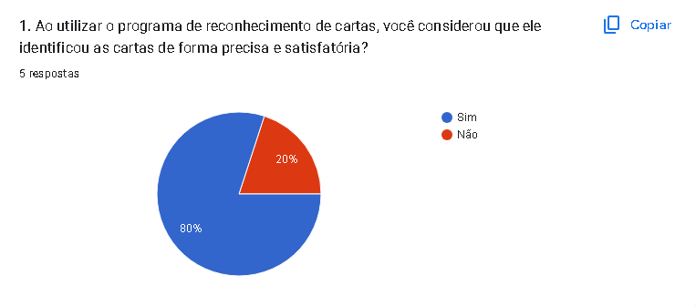
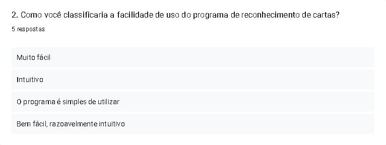
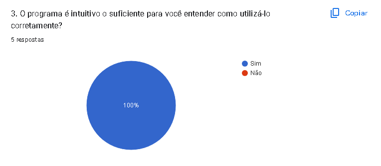
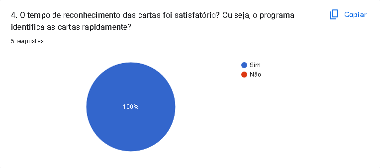
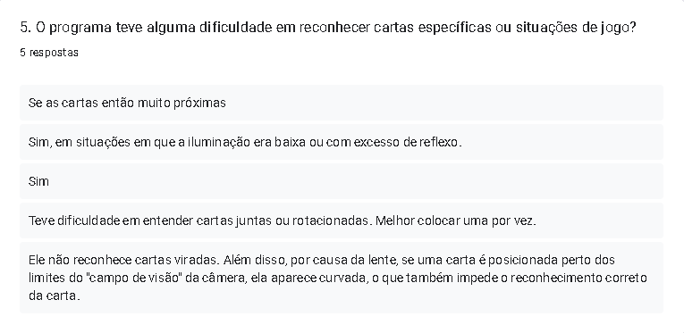
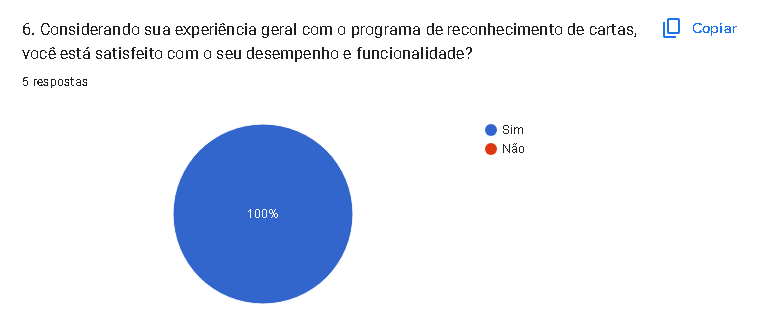
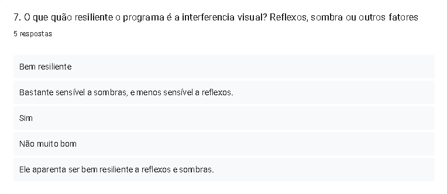
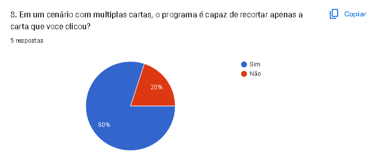
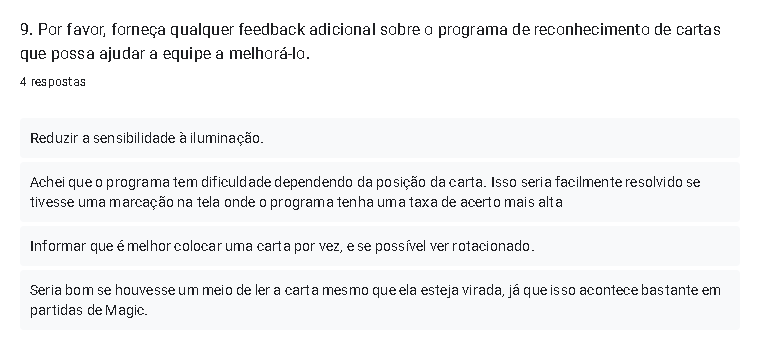

2.4. Aplicação do SPV
SPV2.5. Análise técnica
Para avaliar de forma objetiva, foram criados 2 conjuntos de testes automáticos, através deles testamos múltiplas formas de comparação das imagens da câmera com as do banco de dados, abaixo temos os resultados.
Testes de identificação
O objetivo é validar apenas o sistema de identificação de imagens em situação ideal, com imagens bem cortadas e em boa qualidade.
| Métodod e Comparação | Taxa de Acerto (%) | Tempo para identificar 22 amostras (s) |
|---|---|---|
| WHash | 68.15 | 2.123 |
| PHashSimple | 54.55 | 0.595 |
| PHash | 100 | 0.786 |
| DHashVertical | 72.73 | 0.522 |
| DHash | 100 | 0.526 |
| CropResistantHash | 90.91 | 10.278 |
| AverageHash | 90.91 | 0.837 |
| ColorHash | 31.82 | 0.827 |
| Sift | 81.82 | 2.469 |
Testes completos
O objetivo é testar o sistema completa em uma situação mais próxima da real, recebendo uma imagem com várias cartas e a posição da carta alvo. Testa tanto a identificação quanto a separação.
| Métodod e Comparação | Taxa de Acerto (%) | Tempo para identificar 47 amostras (s) |
|---|---|---|
| WHash | 32.19 | 2.210 |
| PHashSimple | 19.93 | 1.764 |
| PHash | 38.23 | 1.818 |
| DHashVertical | 37.37 | 1.645 |
| DHash | 47.09 | 1.664 |
| CropResistantHash | 31.37 | 16.912 |
| AverageHash | 27.47 | 1.653 |
| ColorHash | 6.72 | 1.955 |
| Sift | 82.02 | 21.258 |
Durante os testes de identificação, o método PHash e DHash tiveram resultados excelentes, com 100% de acerto. Entretanto, durante os testes completos, obtiveram uma taxa de menos de 50%, nestes testes o maior resultado foi obtido, disparadamente, pelo método Sift, com 82.02% de taxa de acerto.
Como o teste completo reflete mais uma situação real de uso, o método Sift foi escolhido para ser usado na aplicação. Apesar dele ser muito mais lento em relação aos outros, isso não causa nenhum impacto durante o uso, esse tempo fica concetrado no calculo do sift em todos os os arquivos das imagens de referência, o que acontece apenas na inicialização do programa. Durante o uso, a identificação fica em torno de 0.3s.
Mesmo com uma taxa de identificação de 82.02%, em situação reais o problema acaba tendo uma performance aparentemente menor, pois a iluminação, rotação e reflexo das cartas atrapalha muito a identificação.
2.6. Lista dos arquivos
| Diretório | Arquivo | Descrição |
|---|---|---|
| src | main.py | Loop principal da aplicação |
| src | interface_manager.py | Renderização da interface gráfica do programa, processamento de inputs do usuário e integração dos outros arquivos |
| src | card_separator.py | Recorte da carta selecionada. |
| src | card_identificator.py | Comparação da carta recortada com as imagens de referência. |
| . | run.sh | Comando para execução do programa |
| . | setup.sh | Instalação de dependências do programa |
| tests | card_identificator_tests.py | Testes automatizados do identificador de cartas usando fotos de alta qualidade recortadas manualmente |
| tests | full_tests.py | Testes automatizados do sistema de indentificação completo da aplicação usando fotos da webcam com diversas cartas e as coordenadas de cada carta |
| card_references | *.jpg | Multiplos arquivos .jpg representando as imagens de referência. OBS: Não estão no repositório do Github |
| tests/images/full_scene | *.png | Imagens da mesa com múltiplas cartas uadas para os testes completos. OBS: Não estão no repositório do Github |
| tests/images/sleeved | *.jpg | Imagens de cartas recortadas com plástico para os testes do indentificador. OBS: Não estão no repositório do Github |
| tests/images/unsleeved | *.jpg | magens de cartas recortadas sem plástico para os testes do indentificador. OBS: Não estão no repositório do Github |
2.7. Análise dos Resultados do Teste de Campo TCS
Com relação ao Teste de Campo, os usuários foram convidados a testar o programa desenvolvido pelo grupo. Para isso, deixamos a estrutura de apoio da webcam montada e as instruções com o passo a passo para que o usuário, mesmo que leigo, conseguisse abrir o programa e testá-lo. O usuário utilizava o programa até que estivesse satisfeito com os testes.
Após a etapa de teste do programa, o usuário era convidado a responder dois questionários, um deles era o Questionário Avaliativo (AQA), que tinha como objetivo, avaliar o usuário, verificando se o mesmo tinha entendido a proposta do programa e suas funcionalidades. O outro questionário tinha como objetivo o forncecimento de feedback dos usuários com relação ao programa, perguntando como foi a experiência do usuário e que tipo de alterações eram interessantes para a melhora do programa.
Instruções e QuestionáriosNo Questionário Avaliativo, utilizamos critérios de avaliação que abrangem aspectos como usabilidade, funcionalidade e impacto na jogabilidade. Abaixo, explicamos detalhadamente os critérios utilizados nesta avaliação:
1. Objetivo Principal: Avalia se o usuário entende claramente qual é o objetivo fundamental do programa de reconhecimento de cartas no contexto do jogo Magic: The Gathering. Isso abrange sua compreensão sobre como o programa melhora a jogabilidade e a interação entre os jogadores.
2. Benefícios do Reconhecimento Automático: Verifica se o usuário compreende os benefícios práticos de usar o programa para identificar automaticamente as cartas no tabuleiro, em comparação com a identificação manual. Isso envolve sua percepção sobre como o programa pode agilizar e enriquecer sua experiência de jogo.
3. Contribuição para a Imersão: Avalia se o usuário entende como o programa de reconhecimento de cartas contribui para uma experiência mais imersiva, semelhante à versão física do jogo. Isso inclui sua compreensão sobre como o programa simula a disposição das cartas e ações durante a partida.
4. Evitando Trapaças e Erros: Verifica se o usuário reconhece a importância do programa na garantia da integridade do jogo e na prevenção de trapaças. Isso abrange sua percepção sobre como o programa cria uma representação visual confiável das ações dos jogadores.
5. Simplicidade de Uso: Avalia se o usuário entende a facilidade de uso do programa e como ele simplifica o processo de identificação de cartas, eliminando a necessidade de comunicação verbal detalhada entre os jogadores.
6. Compatibilidade com a Experiência Física: Verifica se o usuário compreende como o programa busca replicar a experiência física do jogo, permitindo que você utilize seu baralho real durante as partidas online.
7. Conhecimento técnico de Processamento de Vídeo: Avalia se o usuário entende a parte téorica por trás do funcionamento do programa.
Ao avaliar cada um desses critérios, pretendemos entender o quão bem o usuário captou a proposta e os benefícios do programa de reconhecimento de cartas em Magic: The Gathering. A sua visão é fundamental para o aprimoramento contínuo do programa e sua contribuição é altamente valorizada.
Resultados do AQA:


Já no Questionário de Feedback, buscamos entender como foi a experiência do usuário utilizando nosso programa e quais melhorias poderiam ser implementadas.
Resultados do Questionário de Feedback:
        3. Conclusão
Em conclusão, o sistema de reconhecimento de cartas para o jogo Magic: The Gathering é uma ferramenta útil e eficaz para melhorar a jogabilidade e a interação entre os jogadores. Os resultados dos questionários mostraram que os usuários entenderam claramente o objetivo do programa e tiveram uma experiência positiva com o uso do mesmo. Algumas melhorias sugeridas pelos usuários poderiam ser implementadas para tornar o programa ainda mais eficiente e fácil de usar.
Com base nos resultados obtidos, podemos afirmar que os objetivos propostos na introdução foram atingidos. O programa de reconhecimento de cartas para o jogo Magic: The Gathering foi desenvolvido com o objetivo de melhorar a jogabilidade e a interação entre os jogadores, e os resultados dos questionários mostraram que a maioria dos usuários teve uma experiência positiva com o uso do programa.
No entanto, é importante destacar que alguns pontos negativos foram identificados durante a implementação do programa. Por exemplo, alguns usuários relataram dificuldades em utilizar o programa em ambientes com pouca iluminação ou com reflexos na mesa de jogo. Além disso, alguns usuários sugeriram melhorias na questão da rotação da carta, ou seja, fazer com que o programa rotacione a carta para a orientação "correta", independente de como a carta estiver.
Por outro lado, os pontos positivos da implementação do programa também devem ser destacados. O programa foi capaz de reconhecer parte das cartas utilizadas pelos usuários durante os testes de campo, o que pode melhorar a jogabilidade e a interação entre os jogadores. Além disso, o programa tem o potencial de permitir que os jogadores utilizem seus baralhos físicos durante as partidas online, replicando a experiência física do jogo.
4. Referências Bibliográficas
https://nessy.info/post/2018-01-12-magic-the-gathering-card-recognition/https://github.com/dilanHewawitharana/Document-Scanner-using-OpenCV